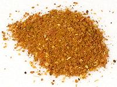

 |
Singapore Curry PowderSingapore | ||||
| Makes: Effort: Sched: DoAhead: |
4 oz ** 20 min Yes |
Southeast Asian curry powders are rather different from Indian versions, lighter and fruitier - this one is aromatic with star anise. Of the options, cardamon would be for more Indian style dishes. This recipe will easily fit in a 4-oz spice jar. | |||
|
3 4 3 8 2 1/4 1/2 1 ---- 1/2 1/2 |
T T T T in T T ---- T T |
Cumin seeds Coriander seeds Star Anise whole Red Chili dry (1) Cloves, whole Cinnamon stick Peppercorns black Turmeric ground ---- Options Cardamon seeds Nutmeg |
Make: - (20 min)
|